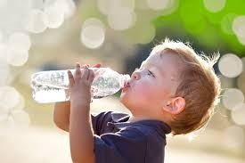
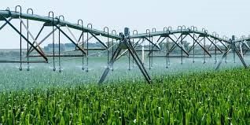

Atras
Importancia Del Agua
El agua es un bien natural que permite el desarrollo de la sociedad, la justicia social y contrarresta la pobreza.
También resalta atribuciones culturales, simbólicas y es un elemento esencial para toda la biosfera.

En promedio, los seres vivos contienen un 70% de agua en su composición. Hay quienes tiene más que otros,
por ejemplo: los vegetales suelen tener más de este líquido que los animales, pero esto nos sirve para afirmar que
es un recurso insustituible para todos los seres vivos; no sólo porque debemos consumirla para mantener la salud,
sino por su intervención en todos los aspectos que contribuyen a sostenernos en el planeta.
Es por esta razón que es un componente para establecer el índice de desarrollo de un país o sociedad.
La importancia del agua para los individuos
Los seres humanos también estamos hechos de agua. El porcentaje en nuestra composición oscila durante toda la vida.
Al nacer somos 80% agua, En la adultez llegamos al 60%. Pero no sólo estamos hechos de agua, sino que esta cumple funciones importantes
como contribuir a la eliminación de sustancias y toxinas a través de los riñones, ayuda a regular la temperatura corporal,
transporta oxígeno y nutrientes a todo el cuerpo a través de la sangre, es parte fundamental de la digestión, alivia la fatiga,
reduce la incidencia de problemas cardíacos y dolores de cabeza.

La importancia del agua para la sociedad
En la agricultura, el agua es insustituible. Es la industria que más utiliza agua a nivel mundial y esto no sólo para la producción de
alimento para las personas sino para los animales que se destinarán para el consumo humano
En cuanto a la industria y generación de energía, se usa un 20% de la demanda de agua global para este sector, aunque aquí el desafío radica en
el uso de este recurso sin generar contaminación. En los ecosistemas y regulación climática, el proceso continuo del ciclo hidrológico permite tener
más o menos la misma cantidad de agua a nuestra disposición aunque este aspecto es cada vez más vulnerable por el cambio climático
